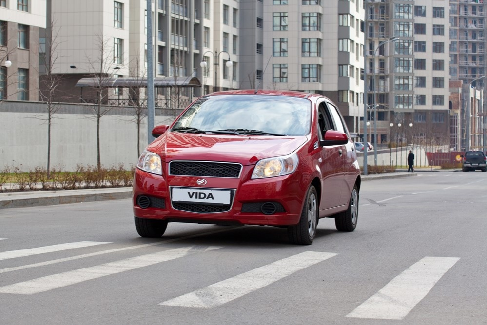
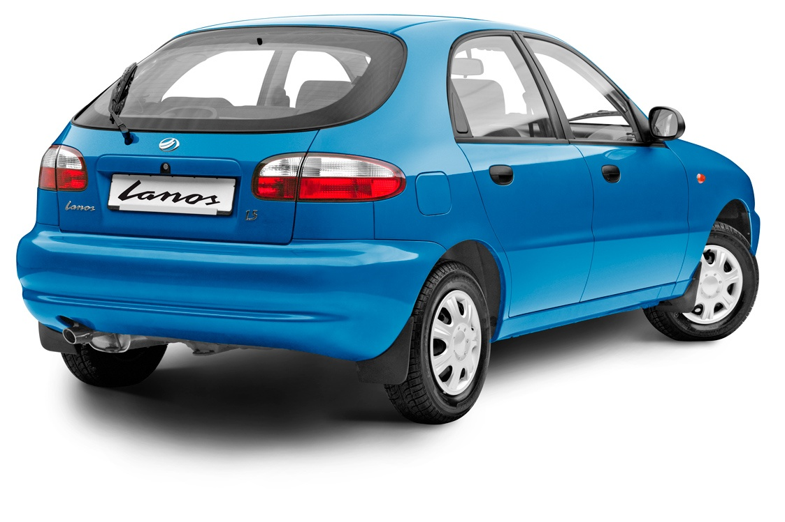

<div class="lines">
	<div id="put_parent" class="content" style="z-index: 100;">
					
		<div class="block_main">
			<h2>Реальний ЗАЗпродаж розпочато. Знижка на автомобілі ЗАЗ 10 000*  грн! 1 липня 2014</h2>
				<p><strong><em>Влітку придбати автомобіль ЗАЗ стає реально вигідніше – на 10&nbsp;000 грн!</em></strong><strong>&nbsp;</strong><strong>*</strong></p>
				<p style="text-align: justify;">Всенародно визнаним авто –&nbsp;<strong>унікальна знижка</strong>! Із&nbsp;<strong>4 червня по 31 липня 2014 року</strong>&nbsp;у всій&nbsp; дилерській мережі &nbsp;«АвтоЗАЗ-сервіс» проходить&nbsp;<strong>реальний ЗАЗпродаж</strong>&nbsp;автомобілів вітчизняного виробника.</p>
				<p style="text-align: justify;">А отже, придбати справжній автомобіль для життя реально за&nbsp;<span>вигідною ціною</span>. Так, знижено на&nbsp;<strong>10&nbsp;000 грн</strong>&nbsp;ціну на автомобілі ЗАЗ&nbsp;<strong>VIDA</strong>&nbsp;та&nbsp;<strong>Lanos</strong>&nbsp;2013 р.в. у кузові «хетчбек».</p>
				<p style="text-align: justify;">Саме з урахуванням знижки у&nbsp;<strong>10 000 грн,</strong>&nbsp; за ціною&nbsp;<strong>104 460 грн,</strong>&nbsp;можна придбати модель&nbsp; <strong>ЗАЗ&nbsp;</strong><strong>VIDA</strong> <strong>&nbsp;</strong>у кузові «хетчбек». Автомобіль має комплектацію&nbsp;<em>comfort</em><em>&nbsp;</em>та комплектується 109-сильним двигуном ACTECO (механічна трансмісія) розробки австрійської інжинірингової компанії AVL. Також&nbsp;&nbsp; <strong>ЗАЗ&nbsp;</strong><strong>Lanos</strong> &nbsp;у компактному виконанні кузова «хетчбек» можна придбати за ціною усього&nbsp;<strong>98 560 грн.</strong>&nbsp;Модель має «топову» комплектації&nbsp;<em>lux</em><em>&nbsp;</em>та оснащена 1,5-літровим двигуном General Motors із МКПП потужністю 86 к.с.</p>
				<p></p>
				<p style="text-align: justify;">В арсеналі обох моделей – усе для безпеки та комфорту! А саме:&nbsp;<em>гідропідсилювач керма, центральний замок, кондиціонер, подушка безпеки водія, інерційні ремені безпеки (2 передні/3 задні),&nbsp; передні електросклопідіймачі, дзеркала з повторювачем повороту, підігрівом та електрорегулюванням, повнорозмірне запасне колесо</em>&nbsp;та ін.</p>
				<p style="text-align: justify;"><em>«Моделі ЗАЗ&nbsp;</em><em>VIDA</em><em>&nbsp;та ЗАЗ&nbsp;</em><em>Lanos</em><em>&nbsp;– одні із найдоступніших на українському ринку автомобілі, які завжди у топах продажу легкових авто.</em>&nbsp;– коментує Генеральний директор Філії «АвтоЗАЗ-сервіс»&nbsp;<strong>Андрій Залуцький</strong>. –&nbsp;<em>Всенародно визнані, сьогодні вони стають ще ближчими до покупця завдяки спеціальним цінам».</em></p>
				<p></p>
				<p style="text-align: justify;">Крім того, з вигідною різницею у ціні можна стати власником інших моделей ЗАЗ 2013 р.в. Так, можна зекономити&nbsp;<strong>8 260 грн</strong>, придбавши автомобіль&nbsp;<strong>ЗАЗ&nbsp;</strong><strong>Forza</strong>&nbsp;у кузовах «седан» або ж «хетчбек» у комплектації&nbsp;<em>comfort</em><em>.</em>&nbsp;Остання багата такими опціями, як&nbsp;<em>кондиціонер, підігрів передніх сидінь, дві подушки безпеки, аудіо система з&nbsp;</em><em>USB</em><em>&nbsp;та 4-ма динаміками</em>, а також&nbsp;<em>системи</em>&nbsp;<em>ABS</em><em>+</em><em>EBD</em>&nbsp;та ін.</p>
				<p style="text-align: justify;">Народний вибір 2013 року &nbsp;–&nbsp;<strong>ЗАЗ&nbsp;</strong><strong>Sens</strong><strong>&nbsp;</strong>– продовжує бути доступним за оптимальними ринковими цінами, що стартують від&nbsp;<strong>82 600 грн.</strong>&nbsp;Саме така ціна моделі у базовій комплектації 2014 р.в.</p>
				<p style="text-align: justify;" align="center"><strong>Обирай свій ЗАЗ! Лови реальну нагоду припаркувати під своїм вікном новий автомобіль!</strong></p>
				<p style="text-align: justify;" align="center"><span>*Знижка діє на автомобіль ЗАЗ VIDA SF4850 та ЗАЗ Lanos TF48YP44 2013 року випуску з 04 червня по 31 липня 2014 року в дилерській мережі Філії "АвтоЗАЗ-сервіс". Кількість автомобілів обмежена. Співвідношення розміру знижки до попередньої ціни реалізації автомобіля ЗАЗ VIDA SF4850 складає 8,74%, а на ЗАЗ Lanos TF48YP44 складає 9,21% станом на 04.06.2014 р. Продавець має право змінювати комплектацію та ціну автомобіля без попереднього повідомлення покупця.</span></p>
				
				<div style="text-align: justify;">&nbsp;</div>    
			
		</div>
									
</div><!-- lines_in -->
		
</div>	
				